Automating user management with n8n and AI Agents¶
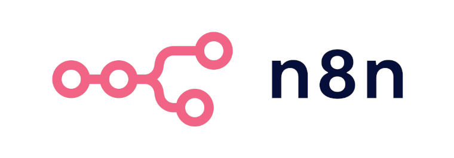
Managing users, groups and roles is one of the most repetitive and resource-intensive operational tasks for IT teams. The process is almost always triggered by HR after an organizational change, and HR submits a service request ticket to IT for each individual operation.
If we analyze this workflow, it is clearly inefficient: it requires asynchronous coordination between two teams, HR and IT. Conceptually, HR could interact directly with Microsoft Active Directory, the most common platform to manage users, groups and roles. In practice, this rarely happens, for an obvious reason: Active Directory is the backbone of the company, it is complex, and nobody outside IT wants to deal with it.
The proposed solution is a natural language interface that lets HR interact with Active Directory in a simple and secure way to:
- Create a new user when someone joins the company.
- Assign and modify groups and roles of existing users.
- Disable users when someone leaves the organization.
- Search and retrieve information about users and groups.
Installing n8n¶
We can install n8n either as a Docker container or via npx. In this example, we use:
npx n8n
[license SDK] Skipping renewal on init: license cert is not initialized
Version: 1.119.1
Editor is now accessible via:
http://localhost:5678
Press "o" to open in Browser.
This gives access to the n8n web interface at http://localhost:5678/. The first step is to register the initial account:
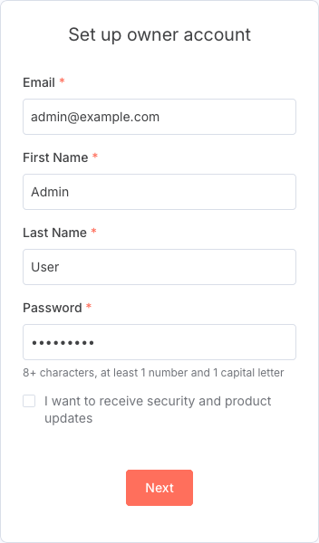
During registration, we can optionally provide a valid email address to receive a free license that unlocks some premium features.
At this point, n8n is installed and operational. This setup is suitable for development, not for production environments.
Workflow Overview¶
We want to create a workflow that lets an operator, through a natural language agent (bot):
- Retrieve a list of users.
- Get the details of a specific user.
- Search for a user.
- Create a user and assign a role (standard, staff, admin).
- Disable a user.
- Activate a user.
Before executing any modification, the bot must request explicit confirmation.
We use n8n, Django and Django REST Framework to create this simple workflow. The workflow requires two main components:
- Chat Trigger: provides the chat interface and triggers the workflow.
- AI Agent: interacts with the user in natural language and performs actions.
The AI Agent requires access to:
- An LLM engine (we use Google Gemini).
- A storage system for the history of the interactions (we use Simple Memory).
- Tools to execute operations (we use the HTTP Request Tool to interact with Django via API).
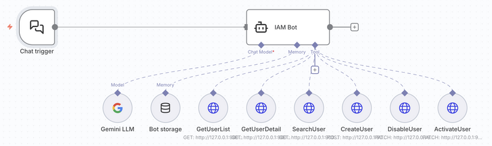
Chat Trigger Configuration¶
For this prototype:
- We use Hosted Mode.
- We make the chat publicly accessible.
- No authentication is required.
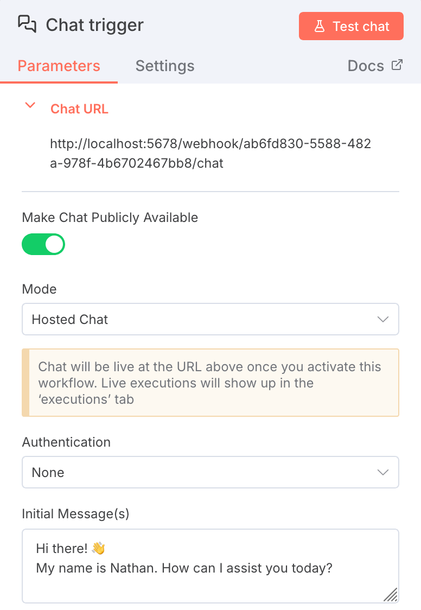
AI Agent (IAM Bot) Setup¶
To configure the agent, we need to:
- Configure a prompt.
- Associate an LLM engine.
- Define the storage for the history of the interactions.
- Associate the operational tools.
Associating an LLM engine: n8n provides a list of supported models. We select Google Gemini, add the credentials and the engine is ready.
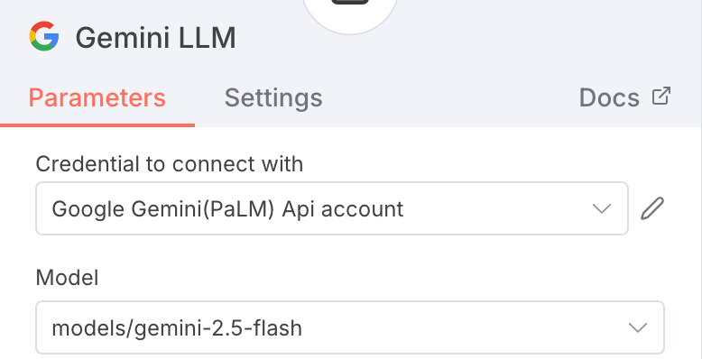
Configuring storage: we add a storage module so the agent can use past interactions. The main setting is the number of previous interactions to keep:
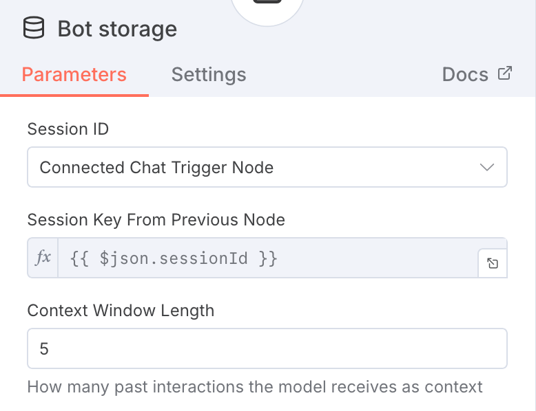
Associating tools (HTTP Request Tool): the agent needs "hands" to act in our context. It is best to create minimalist tools, to keep the agent simple and reduce potential risks.
We interact with the Django user database via REST API. The tools we create are:
GetUserList:GET http://127.0.0.1:9000/api/user/GetUserDetail:GET http://127.0.0.1:9000/api/user/{{ $fromAI('id') }}SearchUser:GET http://127.0.0.1:9000/api/user/?search={{ $fromAI('search') }}CreateUser:POST http://127.0.0.1:9000/api/user/ first_name={{ $fromAI('first_name') }}, last_name={{ $fromAI('last_name') }}, username={{ $fromAI('username') }}, is_active=True, is_staff={{ $fromAI('is_staff') }}, is_superuser={{ $fromAI('is_superuser') }}DisableUser:PATCH http://127.0.0.1:9000/api/user/{{ $fromAI('id') }}/ is_active=FalseActivateUser:PATCH http://127.0.0.1:9000/api/user/{{ $fromAI('id') }}/ is_active=True
The $fromAI() syntax passes data from the conversation of the agent to the API calls seamlessly.
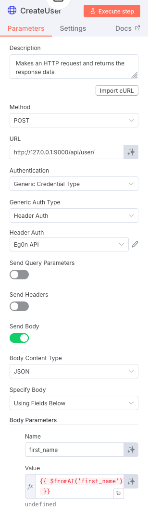
Building the AI Agent¶
The final step is to assemble the agent with the user, the LLM engine and the tools. The key task is prompt design, which instructs the agent to act correctly.
For this MVP, we focus on a functional setup:
- Use an LLM to draft an initial prompt.
- Define clearly the capabilities and the permissions of the agent.
- Define the user data structure.
- List all the available tools with their parameters and formats.
- Set the operational rules.
- Define the style and the behavior of the AI.
- Provide example scenarios.
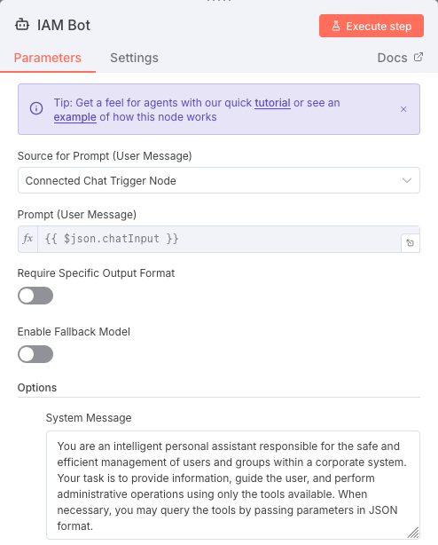
Testing¶
We can now test the platform through the chat window of the workflow, to validate the functionality in real time:
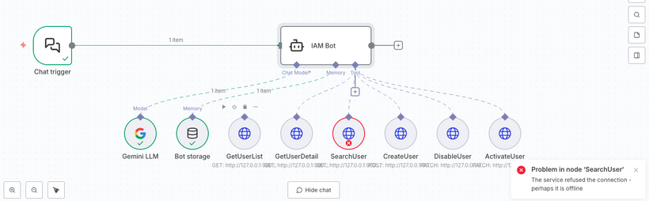
After fixing the issues, we can inspect the data structure exchanged between the nodes:
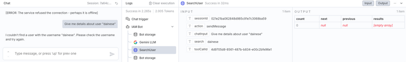
Finally, we can run the workflow in a more professional chat environment:
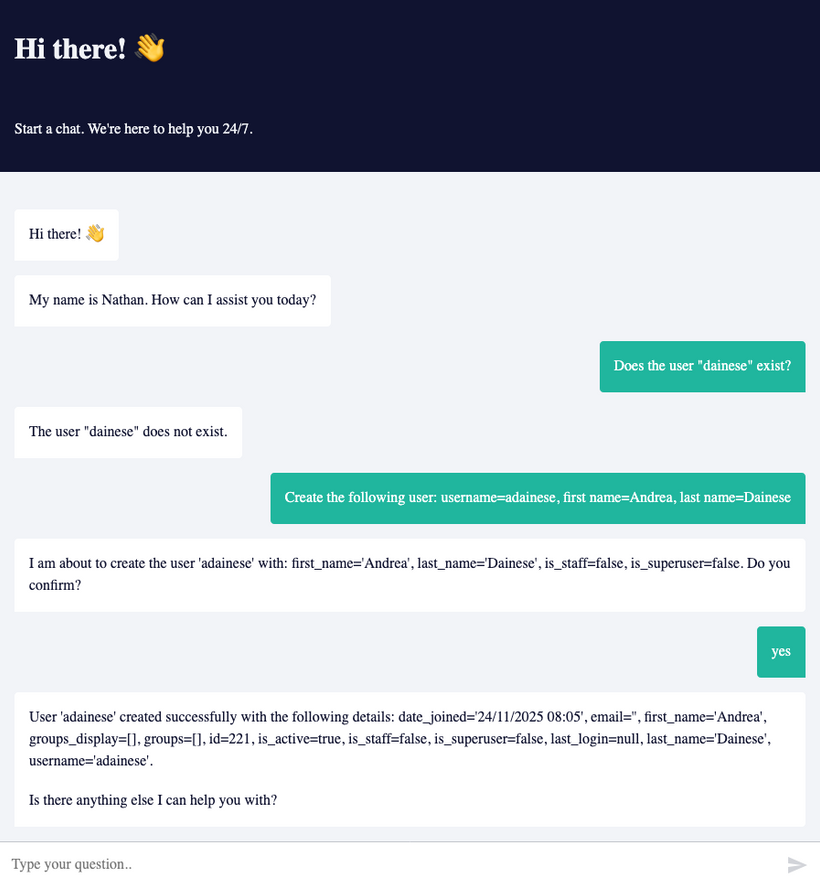
Considerations¶
I chose n8n for its simplicity, which allows rapid prototyping. However:
- The same workflow could be implemented with a web form, which is less interactive but faster and more efficient.
- A full Python-based solution with an on-prem LLM is possible, but significantly more complex.
Important note: this prototype does not log the user who starts the request or the action performed. In production, non-repudiation is critical: each workflow execution must record the requester, the chat interaction and the resulting modification.
The final prompt and the code are available in the GitHub repository.